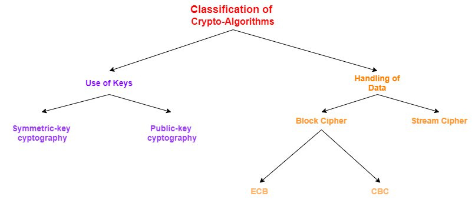
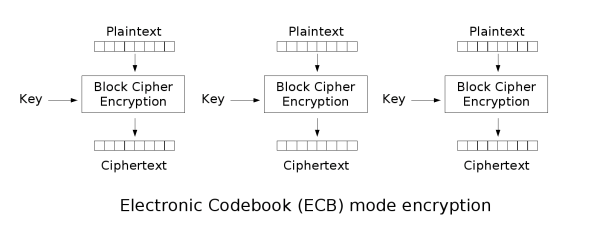
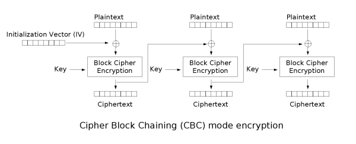
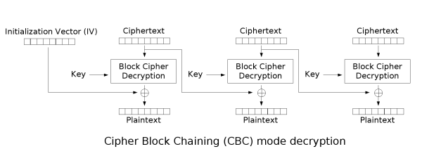

Classification of Crypto-Algorithms

Use of Keys
Based on
how the keys are used, there are two
divisions:
•
Symmetric-key cryptography:
Both the sender and receiver share the same
key
example of crypto-algorithms: ▪ DES( Data Encryption Standard) /
3DES
▪ AES( Advanced Encryption Standard)
▪ RC4
▪ Blowfish
▪ …
•
Public-key
cryptography: Each user has a pair of crypto keys:
▪ A
public key → freely distributed and typically used for
encryption ▪ A
private key →
every
public key is paired with a
private
key which is to be kept secret and typically used for
decryption This scheme is
asymmetric because different keys are used to encrypt and decrypt.
example
scenario: public key (encryption), private key (decryption)
user A just uses user B's
public key to encrypt the message and B decrypts it using his
private key, which only B knows.
example
scenario: private key (encryption), public key (decryption)
user A just uses his
private key to encrypt the message and B decrypts it using the
public key of A that everyone know
this mean that everyone can decrypt the
message with the
public key but only one user can have encrypted it with the
correspondent
private key, this guarantee the origin of the
message.
Handling of Data
Based on
how the plaintext is handled, there are two
classes of algorithms:
•
Block Cipher:
they handle data in blocks (say chunks of 8
bytes or 16 bytes)
example of crypto-algorithms: ▪ DES
▪
AES
Block ciphers can be used in different modes:
◇
ECB (Electronic Code Book)
The plaintext message is divided into blocks and each block is encrypted separately.
In that way
encryption is more easy because identical
plaintext blocks are
encrypted into identical
ciphertext blocks
 ◇
CBC (Cipher Block Chaining) The plaintext message
is divided into blocks and each block is derived from the previous blocks.
An Initialization vector is used
for the first block
 •
Stream Cipher:
Data is
handled one byte at a time
example of crypto-algorithms: ▪ RC4
▪ A5/1
Bibliography:ECB & CBC:
https://en.wikipedia.org/wiki/Block_cipher_mode_of_operation
RSA algorithm:
https://www.di-mgt.com.au/rsa_alg.html